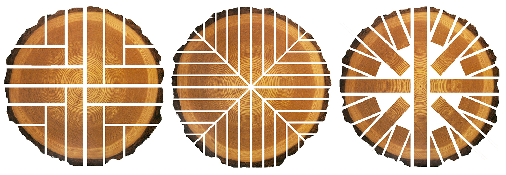

Preparazione ordini
Gestiamo sequenza, raggruppamento e uscita merce per far arrivare il materiale nel formato operativo piu utile al cliente.
Servizi e logistica
Per un cliente professionale il servizio comincia quando la richiesta entra in magazzino: preparazione, tempi, coordinamento e consegna fanno parte della stessa promessa.
Operativita
Ogni fase viene impostata per ridurre incertezze al cliente: meno telefonate correttive, meno passaggi interni, piu continuita.
Gestiamo sequenza, raggruppamento e uscita merce per far arrivare il materiale nel formato operativo piu utile al cliente.
Supportiamo lavorazioni e preimpostazioni selezionate per ridurre attese in laboratorio o in cantiere.
Allineiamo partenza, destinazione e finestre operative in funzione di montaggio, produzione o avanzamento lavori.
Confronto diretto su essenze, pannelli, alternative di stock e tempi di approvvigionamento.
Come lavoriamo
Raccogliamo materiali, misure, destinazione e priorita della fornitura.
Controlliamo disponibilita reali, sostituzioni possibili e tempi.
Ordiniamo, tagliamo e predisponiamo il materiale in funzione dell'uso finale.
Chiudiamo la fornitura con istruzioni chiare, tempistiche confermate e relazione diretta.
Dal tronco al carico
Mostrare il taglio e la preparazione non serve a fare scena: serve a rendere tangibile il controllo sul materiale prima che esca dal deposito.


Servizio continuo
Quando un cliente lavora con richieste frequenti, possiamo costruire una gestione piu leggibile di disponibilita, priorita e uscita materiale.
Parla con noi di una fornitura ricorrente
Contatti rapidi